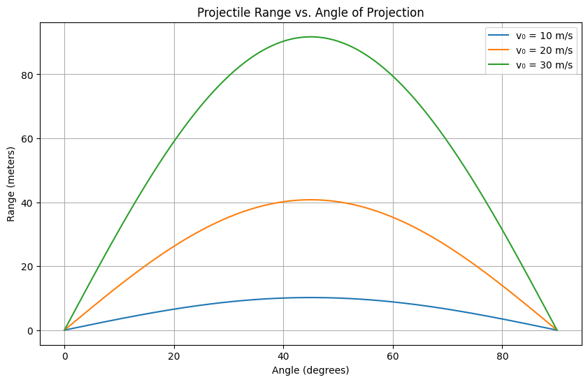

Problem 1
Projectile motion, while seemingly simple, offers a rich playground for exploring fundamental principles of physics. The problem is straightforward: analyze how the range of a projectile depends on its angle of projection. Yet, beneath this simplicity lies a complex and versatile framework. The equations governing projectile motion involve both linear and quadratic relationships, making them accessible yet deeply insightful.
What makes this topic particularly compelling is the number of free parameters involved in these equations, such as initial velocity, gravitational acceleration, and launch height. These parameters give rise to a diverse set of solutions that can describe a wide array of real-world phenomena, from the arc of a soccer ball to the trajectory of a rocket.
1. Theoretical Foundation
Governing Equations of Motion
Starting from Newton's second law:
F = ma
For projectile motion with no air resistance and constant gravity, we split the motion into horizontal and vertical components:
Horizontal motion:
x(t) = v₀ * cos(θ) * t
Vertical motion:
y(t) = v₀ * sin(θ) * t - (1/2) * g * t²
Time of Flight
Set y(t) = 0 (when the projectile hits the ground):
t = (2 * v₀ * sin(θ)) / g
Horizontal Range
Substitute time into x(t) to get the range:
R = (v₀² * sin(2θ)) / g
This shows how different initial conditions (like velocity or angle) give different paths.
2. Analysis of the Range
Range vs. Angle
The formula:
R(θ) = (v₀² / g) * sin(2θ)
Key insights:
- Maximum range when θ = 45°
- R(θ) = R(90° - θ) (symmetric)
Effect of Parameters
- Velocity: Range increases with
v₀² - Gravity: Range decreases with higher
g
3. Practical Applications
- Sports: Kicking or throwing balls
- Engineering: Cannon design, sprinkler systems
- Science: Mars rovers or satellite launch planning
Real-world tweaks:
- Launch from a height: y₀ ≠ 0
- Air resistance: add drag force F = -kv
- Non-flat ground or wind effects
4. Python Simulation
import numpy as np
import matplotlib.pyplot as plt
g = 9.81
def projectile_range(v0, theta_deg):
theta_rad = np.radians(theta_deg)
return (v0**2) * np.sin(2 * theta_rad) / g
angles = np.linspace(0, 90, 300)
initial_velocities = [10, 20, 30]
plt.figure(figsize=(10, 6))
for v0 in initial_velocities:
ranges = [projectile_range(v0, angle) for angle in angles]
plt.plot(angles, ranges, label=f"v₀ = {v0} m/s")
plt.title("Projectile Range vs. Angle of Projection")
plt.xlabel("Angle (degrees)")
plt.ylabel("Range (meters)")
plt.legend()
plt.grid(True)
plt.show()

5. Limitations
- Ignores air resistance and wind
- Assumes flat terrain and same launch/landing height
- Assumes constant gravity
Future Improvements
- Add drag using numerical methods (Euler/Runge-Kutta)
- Handle angled terrain or varied heights
- Real-world simulations for sports and aerospace
Summary
- Projectile motion = horizontal + vertical motion
- Max range at 45°
- Range ∝
v₀²andsin(2θ) - Python can simulate and visualize changes